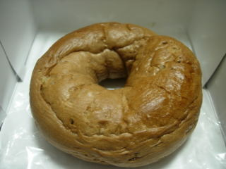
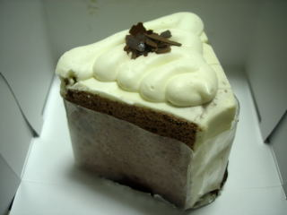
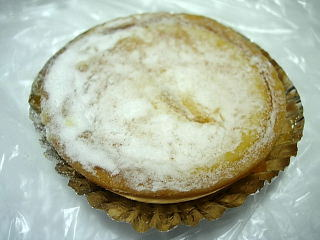
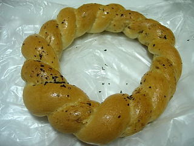
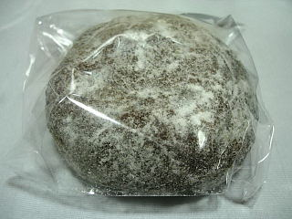
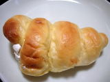

モンマルトのチョコ＆マシュマロベーグル
2010/9/5
チョコチップが入ったベーグルでした。

商品名にマシュマロってあるんですが、味はよくわかりませんでした。
なにか小さなつぶつぶがあったので、それがマシュマロだったのかもしれません。
イオン出雲店内にもあります。
2010/9/5
チョコチップが入ったベーグルでした。

商品名にマシュマロってあるんですが、味はよくわかりませんでした。
なにか小さなつぶつぶがあったので、それがマシュマロだったのかもしれません。
2010/9/4
クリームが乗ったシフォンです。

クリームの味がモンマルトさんらしいなって思いました。
シフォンのチョコ色が濃いので、甘い味かな？と思ったんですが、そんなに濃い味じゃなく、食べ易かったです。
2009/7/25
ジャスコ出雲店内にあるモンマルトに行ったら、土日限定商品があったので買ってみました。
ベイクドチーズケーキです。限定って言われると弱いので買っちゃいました。

あっさりとしたチーズ味で、軽かったです。タルトの生地の味が出てて、焼き菓子らしい味だなって思いました。
こっちはオールブランです。
見た感じ通りのパンで、ハーブの風味がするパンでした。

今日は両方とも200円位のパンで、ちょっとリッチな商品でした。
2008/2/24
コンガリ焼けたドーナッツに砂糖がいっぱい付いてますね。

中に餡子がいっぱい入ってはなかったですが、アンが甘かったので、とても甘かったです。
アンドーナッツは甘いが一番ですね。もうちょっと餡子の味があるともっと嬉しかったですけど。
2007/12/31
ちょっとしっかりした食感の玉子パンがベースのコロネでした。
いちじくのクリームはほんのりいちじく味がするくらいのやさしい味付けだったので、パンの味が強めに楽しめました。

イチジクの時期ではないですが、出雲市特産（？）のいちじくの商品が、帰省客が多い時期に販売しているのは話の種になっていいですね。